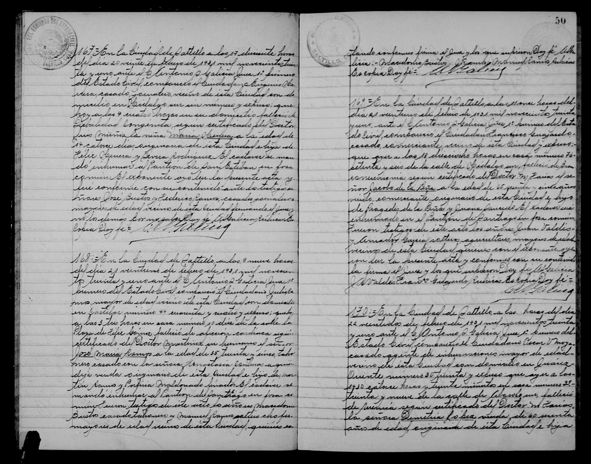

Jacobo de la Peña Saucedo

Información Genealógica
Nombre: Jacobo de la Peña Saucedo
Relevancia: Representante de la unión de los apellidos de la Peña y Saucedo, ambos con profunda historia y registros de la Inquisición en la Nueva España.
Transcripción del Documento
Acta 169.
En la Ciudad de Saltillo, a las once horas del dia veintiuno de Febrero de 1931 mil novecientos treinta y uno... compareció el ciudadano Francisco Guajardo... y expuso: que ayer a las 18 dieciocho horas en casa número 76 de la calle de Hidalgo sur, falleció de debilidad congénita según certificado del Doctor M. Farias... el señor Jacobo de la Peña a la edad de 65 sesenta y cinco años, viudo, comerciante, originario de esta Ciudad y hijo de Pragedis de la Peña y Juana Saucedo. El cadáver será inhumado en el Panteón de Santiago en fosa común.